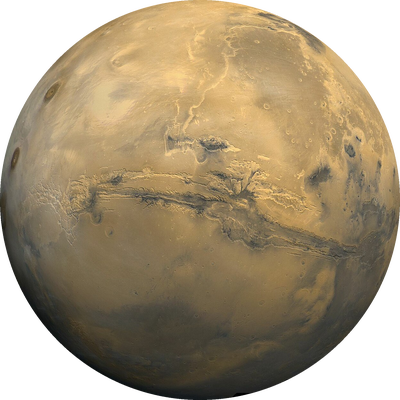
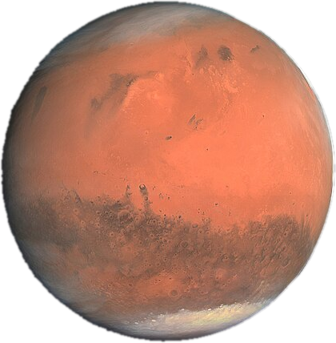
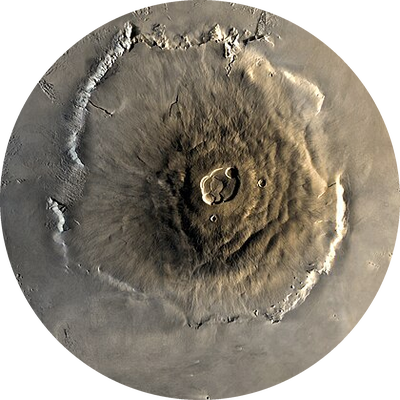

Mars
Mars is the fourth planet from the Sun and is known as the Red Planet. Iron oxide, or rust, in its soil gives it the reddish color.



What would you weigh on Mars?
Facts about Mars
- Diameter: about 6,779 km, roughly half the size of Earth
- Distance from the Sun: about 228 million km
- A day lasts about 24.6 hours and a year lasts 687 Earth days
- It has two small moons, Phobos and Deimos
- The average temperature is about -63 °C
- Olympus Mons, its tallest volcano, is about three times taller than Mount Everest